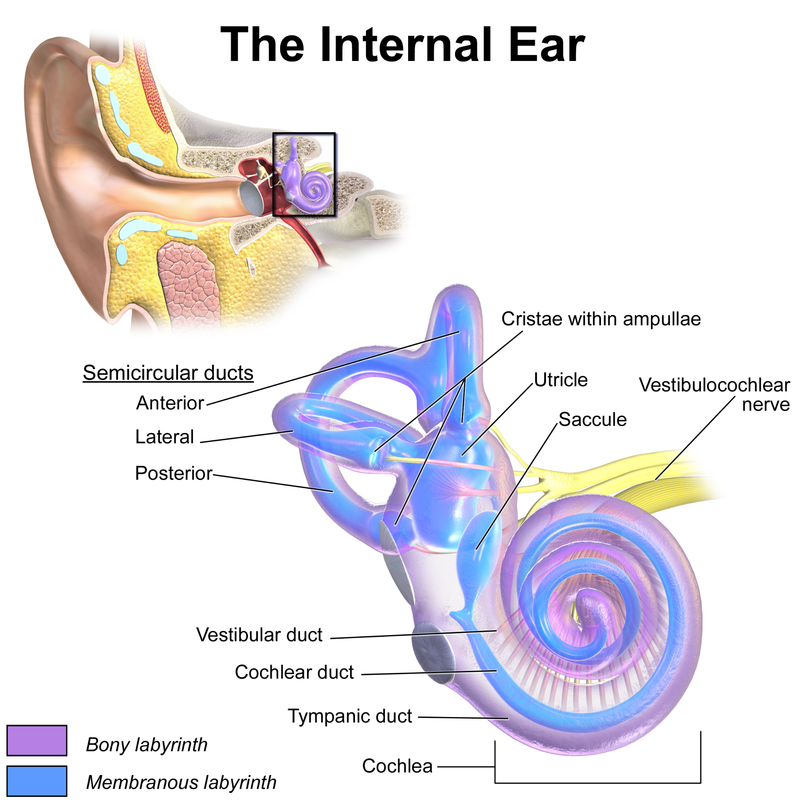

Different parts of the respond most strongly to different frequencies. High- sounds produce the greatest movement near the base of the , close to the . Low-frequency sounds produce the greatest movement farther along, toward the apex.
Greater sound produces more movement and changes activity in auditory nerve fibres. A louder sound does not make each action potential taller. The nervous system uses patterns of firing and the number of active fibres to represent intensity.

Find the cochlea below the balance loops. Its broad basal end is near the entry from the middle ear; following the spiral inward brings you toward its tip, the apex. The basilar membrane extends along this coiled structure. “Near the base” and “near the apex” are positions along that membrane, not higher and lower points on the screen.
| Base near the oval window | Farther along the membrane | Apex at the far end |
|---|---|---|
| Higher-frequency peak responses | Intermediate peak-response locations | Lower-frequency peak responses |
The membrane's mechanical properties vary along its length, so different sound frequencies produce their greatest motion at different places. Hair cells at the most strongly moving place change their input to the corresponding nerve fibres. The brain can use which pathways are active as information about frequency. This is place coding. The sound does not acquire its pitch because the nerve signal has a taller peak, and high and low tones do not require separate entrances to the ear.